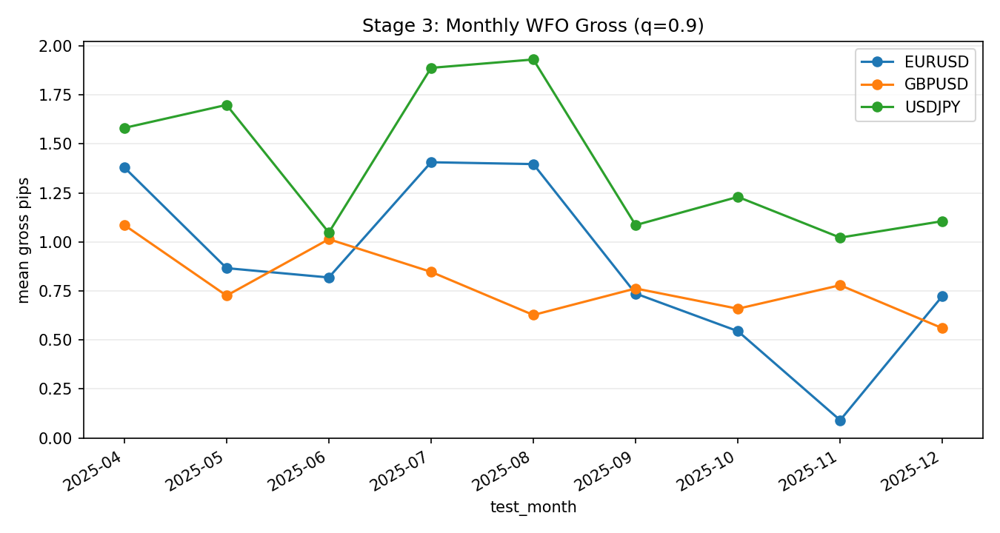

Stage 3 - Monthly Walk-Forward Modeling
Objective
Evaluate model filtering with strict monthly walk-forward ordering and quantify threshold robustness.
- WFO metrics:
data/analysis/tick_opportunity_mining/wfo_*/<SYMBOL>_monthly_metrics_all.csv- WFO thresholds:
data/analysis/tick_opportunity_mining/wfo_*/<SYMBOL>_monthly_thresholds_all.csv- WFO predictions:
data/analysis/tick_opportunity_mining/wfo_*/<SYMBOL>_monthly_predictions_all.parquet
Process
- Train on prior months only and score next month.
- Apply execution quantile filter (
q, default 0.9).
- Compute threshold/calibration/turnover diagnostics (
W13-W15).
CatBoost Model Specification (Critical)
Model Purpose
- Rank OCO event rows by conditional probability of positive gross outcome (
target_gross_pos=1).
- Selection is then performed by thresholding this probability stream, not by direct regression on pip magnitude.
Model Validity and Retrain Cadence
- Validity window: CatBoost predictions are valid for exactly one scored test month.
- Policy term: one-month validity.
- Expiry rule: At the first timestamp of a new calendar test month, prior-month predictions are stale for production decisions.
- Retrain cadence: retrain monthly using the latest rolling train window (
rolling_train_months, default 3).
- Policy term: monthly retrain.
- Cross-year behavior: in cross-year mode, history is prepended only to satisfy rolling warmup; validity is still one scored month at a time.
Training Label
- Binary target:
target_gross_pos = 1 if target_gross_pips > 0, else 0.
target_gross_pips is the realized gross pip label generated from strict forward path logic in prior stages.
Feature Vector (Current)
cost_est_pipsrange_pipsret1_pipsret_zret_abs_zvel_cost_units_h1vel_abs_cost_units_h1spread_ztick_rate_zhour_utchl_firsthl_first_mean_24hl_pos_frac_mean_24bar_tickshorizonbarrier_pips
Source of truth: scripts/run_tick_opportunity_monthly_wfo.py (_feature_cols).
CatBoost Hyperparameters (Current)
loss_function=Loglosseval_metric=AUCiterations=350learning_rate=0.05depth=6l2_leaf_reg=5.0random_seed=seed + month_indexverbose=False
Source of truth: scripts/run_tick_opportunity_monthly_wfo.py (_wfo_monthly).
Monthly WFO Training Loop
- Build month boundaries.
- For each test month
M, use prior rolling_train_months months as train window.
- Candidate prefilter inside train window only:
- keep
candidate_uid where train_rows >= min_candidate_rows_in_train_window
- and
train_mean_gross > 0.
- Apply same keep-set to test month rows.
- Enforce minimum train/test row gates and class-balance gate (
target_gross_pos has both classes).
- Fit CatBoost on train rows and score test rows with
predict_proba(... )[:,1].
- Persist per-row
pred_prob and threshold-selection flags for downstream stages.
Thresholding Logic
- Candidate quantiles are swept (default:
0.5,0.6,0.7,0.8,0.9,0.95).
execution_quantile (default 0.9) is the live selection quantile.- Two modes are supported:
train_quantile: threshold from current train-month score distribution.rolling_days: threshold computed causally from a rolling history pool (rolling_threshold_days, rolling_threshold_min_history), including train history and already-seen prior test days only.- If rolling history is insufficient, Stage 3 uses a strict train-only fallback quantile.
- It never uses unseen same-month test pools for fallback thresholding.
- If both rolling history and train history are unavailable, threshold source is
no_history and rows are fail-closed (not selected).
- Output rows include execution-threshold fields used by Stage 5:
threshold_execselected_execthreshold_modethreshold_daysthreshold_source
Supported Evaluation Windowing
- Legacy single-year mode via
eval_year.
- Cross-year causal window via:
eval_start_montheval_end_month- When cross-year mode is used, the engine prepends exactly
rolling_train_months months of history before eval_start_month to preserve train warmup without leakage.
Stage-3 Output Metrics
- Classifier diagnostics:
- AUC
- Brier score
- Selection diagnostics:
- Coverage at each quantile
- Mean/median gross pips for selected rows
- W13/W14/W15 stability metrics
Prediction Output Schema (Per Row)
| Column |
Type |
Meaning |
Downstream use |
close_ts |
timestamp (UTC) |
Event decision timestamp |
Join key for execution realism and audits |
candidate_uid |
string |
Unique candidate/state identifier |
Join key for reduced-core state filtering |
pred_prob |
float |
CatBoost probability for target_gross_pos=1 |
Ranking signal for thresholding |
target_gross_pips |
float |
Realized gross pip label |
Outcome metrics and diagnostics |
target_gross_pos |
int (0/1) |
Binary sign label |
AUC/Brier and classification diagnostics |
threshold_mode |
string |
rolling_days or train_quantile |
Provenance of threshold generation |
threshold_days |
int |
Rolling lookback days if rolling_days, else 0 |
Traceability of threshold policy |
threshold_source |
string |
rolling_history, train_fallback, train_quantile, or no_history |
Causal provenance audit for threshold assignment |
threshold_exec |
float |
Applied execution threshold for execution_quantile |
Defines selected decision boundary |
selected_exec |
int (0/1) |
Whether row passed threshold_exec |
Default Stage-5 entry set (selection_mode=auto/exec_flag) |
Metric Definitions (Exact)
AUC: ROC area for classifying target_gross_pos; threshold-independent ranking quality.Brier: mean squared probability error, mean((pred_prob - target_gross_pos)^2); lower is better.Coverage@q: selected_rows / total_rows for quantile q.Mean/Median gross@q: mean/median of target_gross_pips on rows selected at quantile q.W13_threshold_fragility:- Around execution
q, aggregate mean gross by quantile and compute slope:
(max(mean_gross_near_q)-min(mean_gross_near_q)) / (max(q_near)-min(q_near))W14_brier_drift_std = std(monthly_brier)W15_selection_turnover = 1 - mean(Jaccard(selected_uid_month_t, selected_uid_month_t-1))
Operating Bands (Policy Reference)
These are operator bands for interpretation and escalation alignment. Stage hard-gate authority remains governance checks.
| Metric |
Green |
Amber |
Red |
Direction |
Primary action |
W13_threshold_fragility |
< 2.5 |
>= 2.5 and < 4.0 |
>= 4.0 |
lower is better |
recalibrate threshold policy |
W14_brier_drift_std |
< 0.01 |
>= 0.01 and < 0.02 |
>= 0.02 |
lower is better |
review calibration drift |
W15_selection_turnover |
< 0.25 |
>= 0.25 and < 0.40 |
>= 0.40 |
lower is better |
investigate selection instability |
AUC |
>= 0.55 |
>= 0.52 and < 0.55 |
< 0.52 |
higher is better |
review feature/regime fit |
Brier |
<= 0.245 |
> 0.245 and <= 0.255 |
> 0.255 |
lower is better |
review probability calibration |
Coverage@q=0.9 |
0.08-0.12 |
0.05-0.08 or 0.12-0.15 |
< 0.05 or > 0.15 |
center-stable |
inspect threshold drift |
Band notes:
- W13/W14/W15 thresholds align to configs/research/docs/operator_action_rules.yaml.
- AUC/Brier/Coverage are operational reference bands (not standalone hard deploy gates).
Explicit Leakage Controls
- No row from month
M is used in model fitting for month M.
- Candidate keep-set is derived from train-window aggregates only.
- Rolling threshold in
rolling_days mode uses only:
- train rows before test month day
D
- test rows from days strictly before
D
- Never future-in-test.
- Fallback policy is strict: if rolling history is short, use train-only fallback; if train history is absent, mark
threshold_source=no_history and do not select.
Known Model Limits
pred_prob is a ranking score, not a calibrated expected-pips estimator.- Hyperparameters are static; no monthly hyperparameter re-optimization is currently performed.
- Feature importances and calibration curves are not yet part of mandatory Stage-3 outputs.
Interaction with Reduced-Core Selection (Stage 5)
- Stage 3 contributes model-layer filtering only (
selected_exec from pred_prob vs threshold_exec).
- Stage 5 contributes state-layer reduced-core filtering (
core_spec_match) plus execution feasibility.
- Final tradable rows are the strict intersection of these gates, not a Stage-3-only pass.
- Reference:
docs/strategy_bible/stage_05_reduced_core.md section CatBoost x Core Spec Interaction.
Exact Calculations
- Metric formulas and units are defined in
Metric Definitions (Exact) above.
- Computation is performed on strict out-of-sample month slices produced by the monthly WFO loop.
Causality / Leakage Controls
- Strict 3M train -> 1M test ordering.
- Selection thresholding uses historical window only (rolling causal threshold).
Failure Modes
- Threshold fragility: tiny
q change causes large performance change.
- Calibration drift over months.
- High turnover suggesting unstable signal identity.
Interpretation Guide
- Lower
W13 is less fragile.
- Lower
W14 indicates more stable calibration.
- Lower
W15 indicates higher month-to-month continuity.
Validation Gates
- WFO gating and leakage contract checks are hard gates.
W13-W15 remain informational until promoted.
Canonical Analysis Reports
docs/analysis/eurusd_tick_opportunity_monthly_wfo_oco_fullcap_report.mddocs/analysis/gbpusd_tick_opportunity_monthly_wfo_oco_fullcap_report.mddocs/analysis/usdjpy_tick_opportunity_monthly_wfo_oco_fullcap_report.mddocs/analysis/oco_threshold_sensitivity_report.md
Operator Decision Tree
- If any hard gate in this stage fails, block promotion and escalate using the operator runbook.
- If only warning/amber diagnostics trigger, continue with mitigation and add an owner/deadline in remediation artifacts.
How To Run
- Run the
Reproduction Commands in this stage exactly as listed.
- Confirm artifacts are refreshed and timestamps are current before interpreting outcomes.
How To Interpret Outputs
- Read
Key Results first for pass/fail posture and core health metrics.
- Use
Interpretation Notes and Action Trigger Summary to map observed values to operational actions.
What To Do If It Fails
critical/high: halt deployment progression, remediate root cause, rerun stage and downstream dependent stages.medium/low: open tracked remediation with owner and ETA, monitor for recurrence in next cycle.
Reproduction Commands
uv run python scripts/run_tick_opportunity_monthly_wfo.py \
--config configs/research/experiments/eurusd_tick_opportunity_monthly_wfo_oco_fullcap_2025.yaml
uv run python scripts/build_oco_threshold_sensitivity_report.py
Traceability
scripts/run_tick_opportunity_monthly_wfo.pyscripts/build_oco_threshold_sensitivity_report.pydocs/analysis/*_tick_opportunity_monthly_wfo_oco_*_report.mddocs/strategy_bible/generated/stage_03_snapshot.md
Generated Run Snapshot
Auto Snapshot - Stage 03
- generated_at:
2026-02-28 08:46:09 UTC
- Execution threshold summary is aligned to quantile=0.9.
- Metrics are strictly month-forward (3M train -> 1M test).
- W13-W15 are informational diagnostics for threshold fragility, calibration drift, and selection turnover.
Key Results
| symbol |
months |
auc_mean |
brier_mean |
test_rows_total |
w13_threshold_fragility |
w14_brier_drift_std |
w15_selection_turnover |
| EURUSD |
9 |
0.526973 |
0.249766 |
3.3563e+06 |
1.34602 |
0.00162703 |
0.0799501 |
| GBPUSD |
9 |
0.51732 |
0.251184 |
46722 |
0.700198 |
0.00128023 |
0.137968 |
| USDJPY |
9 |
0.52696 |
0.247879 |
51512 |
0.5354 |
0.00217768 |
0.175758 |
Interpretation Notes
- Execution threshold summary is aligned to quantile=0.9.
- Metrics are strictly month-forward (3M train -> 1M test).
- W13-W15 are informational diagnostics for threshold fragility, calibration drift, and selection turnover.
Action Trigger Summary
| symbol |
metric_id |
band |
severity |
action_code |
action_summary |
owner |
| EURUSD |
W13_threshold_fragility |
green |
info |
A0_MONITOR |
within policy band |
research |
| EURUSD |
W14_brier_drift_std |
green |
info |
A0_MONITOR |
within policy band |
research |
| EURUSD |
W15_selection_turnover |
amber |
medium |
A1_REVIEW |
review and monitor |
research |
| GBPUSD |
W13_threshold_fragility |
green |
info |
A0_MONITOR |
within policy band |
research |
| GBPUSD |
W14_brier_drift_std |
green |
info |
A0_MONITOR |
within policy band |
research |
| GBPUSD |
W15_selection_turnover |
green |
info |
A0_MONITOR |
within policy band |
research |
| USDJPY |
W13_threshold_fragility |
green |
info |
A0_MONITOR |
within policy band |
research |
| USDJPY |
W14_brier_drift_std |
green |
info |
A0_MONITOR |
within policy band |
research |
| USDJPY |
W15_selection_turnover |
green |
info |
A0_MONITOR |
within policy band |
research |
Details
| symbol |
months |
mean_coverage |
mean_gross_pips |
rows_selected |
| EURUSD |
9 |
0.0953233 |
0.884677 |
325515 |
| GBPUSD |
9 |
0.0945693 |
0.784329 |
4427 |
| USDJPY |
9 |
0.0964553 |
1.39854 |
4939 |
Plots

Threshold Robustness Around Execution Quantile
| symbol |
test_month |
quantile |
mean_gross_pips |
coverage |
selected_rows |
| EURUSD |
aggregate |
0.8 |
0.758561 |
0.191746 |
72544.3 |
| EURUSD |
aggregate |
0.9 |
0.884677 |
0.0953233 |
36168.3 |
| EURUSD |
aggregate |
0.95 |
0.960465 |
0.0475931 |
18029.7 |
| GBPUSD |
aggregate |
0.8 |
0.795246 |
0.193268 |
1005.22 |
| GBPUSD |
aggregate |
0.9 |
0.784329 |
0.0945693 |
491.889 |
| GBPUSD |
aggregate |
0.95 |
0.690217 |
0.0459482 |
238.778 |
| USDJPY |
aggregate |
0.8 |
1.31823 |
0.196447 |
1120.89 |
| USDJPY |
aggregate |
0.9 |
1.39854 |
0.0964553 |
548.778 |
| USDJPY |
aggregate |
0.95 |
1.32811 |
0.0468008 |
264.444 |
Overfitting Diagnostics (Exec Quantile)
| symbol |
quantile |
rows |
months |
positive_months |
lb95_trade_mean_gross_pips |
lb95_trade_mean_gross_pips_iid |
lb95_trade_mean_gross_pips_month_block |
pvalue_month_mean_gt0 |
pvalue_bonferroni |
pvalue_fdr_bh |
uplift_vs_null_pips |
pvalue_perm_uplift |
pvalue_perm_fdr_bh |
majority_positive_months |
bonferroni_pass_10pct |
fdr_pass_10pct |
perm_fdr_pass_10pct |
| EURUSD |
0.9 |
59955 |
9 |
9 |
1.04912 |
nan |
nan |
2.4283e-09 |
1.45698e-08 |
2.91396e-09 |
nan |
nan |
nan |
True |
True |
True |
False |
| GBPUSD |
0.9 |
70579 |
9 |
9 |
0.973913 |
nan |
nan |
0 |
0 |
0 |
nan |
nan |
nan |
True |
True |
True |
False |
| USDJPY |
0.9 |
77785 |
9 |
9 |
1.33687 |
nan |
nan |
0 |
0 |
0 |
nan |
nan |
nan |
True |
True |
True |
False |
- Interpretation: these diagnostics are computed on WFO out-of-sample predictions only.
bonferroni_pass_10pct and fdr_pass_10pct summarize multiplicity-adjusted significance at alpha=0.10.
Leakage/Label Integrity (WFO Focus)
| symbol |
checks_total |
checks_failed |
high_critical_failed |
| EURUSD |
6 |
0 |
0 |
| GBPUSD |
6 |
0 |
0 |
| USDJPY |
6 |
0 |
0 |